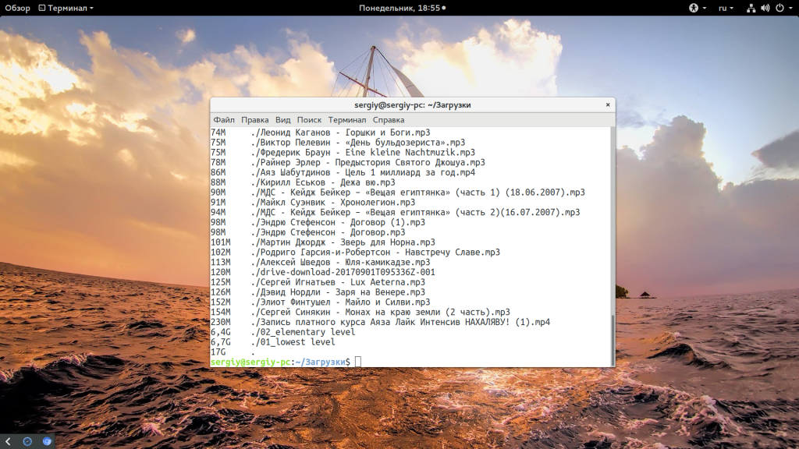
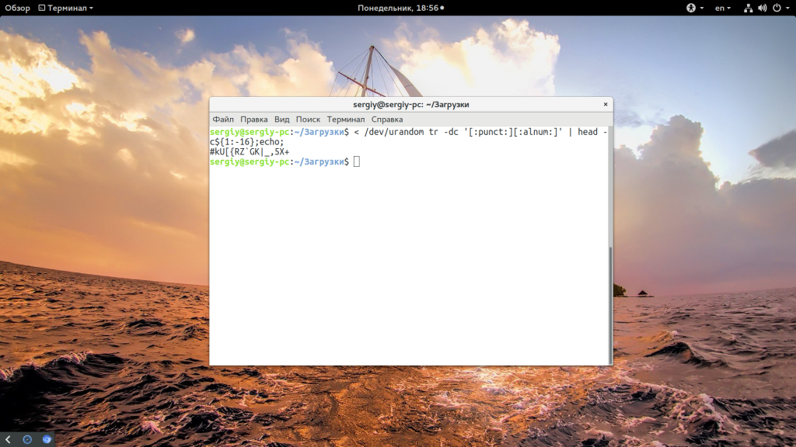
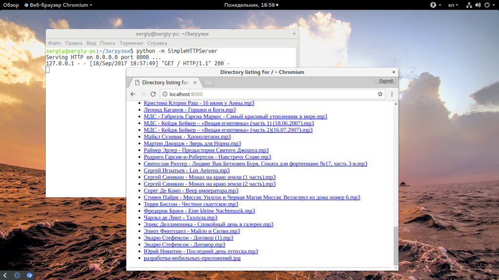
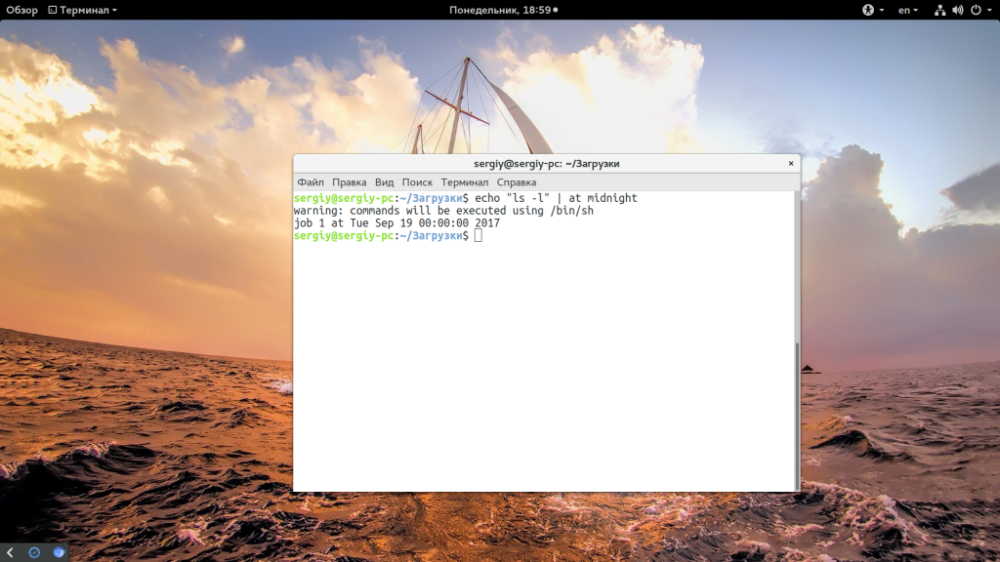
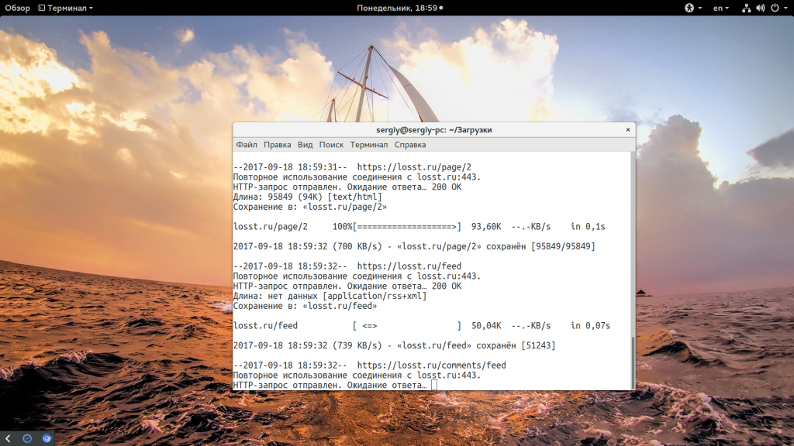
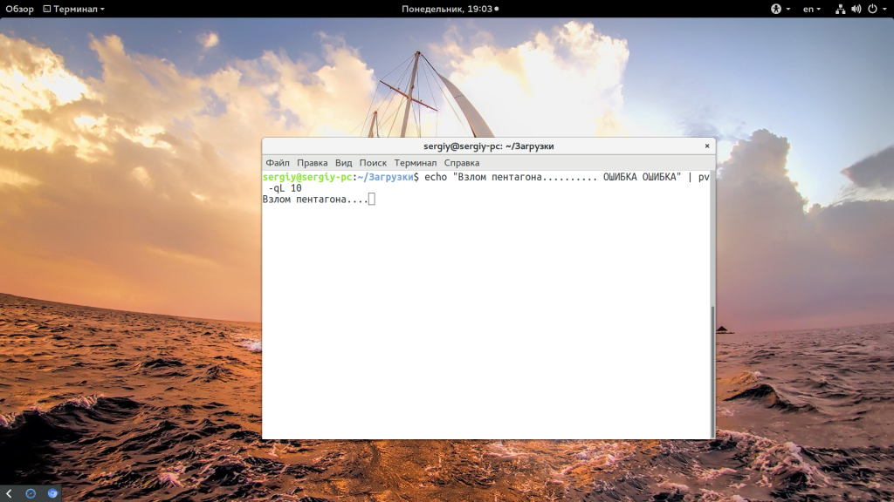
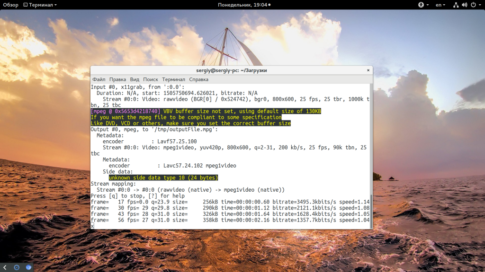

Bash скрипты Linux
Списки Сентябрь 19, 2017 5 admin
Среди системных администраторов и обычных пользователей Linux достаточно популярна практика писать Bash скрипты для автоматизации и облегчения выполнения определенных задач в операционной системе. Фактически, вы написали один раз порядок действий, которые нужно выполнить, расписали файлы и так далее, а затем просто пишите одну короткую команду и все действия выполняются как нужно. Можно пойти еще дальше и запланировать автоматическое выполнение скрипта.
В этой небольшой статье мы собрали самые полезные Bash скрипты Linux, которые вы можете использовать в своих системах. Некоторые из них состоят из нескольких строк, некоторые помещаются в одну строку. Здесь есть как небольшие сниппеты, которые вы можете использовать в своих скриптах, так и полноценные интерактивные скрипты, для работы с ними через консоль.
Начнем с небольших полезных команд, которые могут пригодиться в различных ситуациях.
Первый скрипт сортирует содержимое текущей папки по размеру:
du -a -d 1 -h | sort -h

Но в большинстве случаев это не эффективно, вам намного удобнее будет использовать утилиту ncdu. Вам нужно быстро создать пароль и вы не хотите устанавливать pwgen, можете использовать такую команду:
< /dev/urandom tr -dc '[:punct:][:alnum:]' | head -c${1:-16};echo;

Эта команда запускает простейший HTTP сервер в текущей папке. Очень удобно для отладки чего либо:
python -m SimpleHTTPServer

С помощью команды at можно запланировать выполнение произвольной команды один раз в указанное время, например, в полночь:
echo "ls -l" | at midnight

Скрипт передает звук от вашего микрофона на другой компьютер по ssh. Качество будет очень плохим, но тем не менее это работает:
dd if=/dev/dsp | ssh -c arcfour -C username@host dd of=/dev/dsp
Хотите скачать весь сайт на компьютер для того, чтобы потом иметь возможность просматривать его оффлайн? Для этого достаточно утилиты wget:
wget --random-wait -r -p -e robots=off -U mozilla https://losst.ru

Будут загружены все файлы сайта, включая изображения, игнорированы правила из файла robots.txt и в качестве агента пользователя будет сообщаться Mozilla Firefox. А такой командой можно реализовать самый простой таймер:
time read (ctrl-d для остановки)
Выводит команды bash, которые используются чаще всего:
history | awk '{a[$2]++}END{for(i in a){print a[i] " " i}}' | sort -rn | head
Такой командой вы можете выводить символы с небольшой задержкой, как в фильмах:
echo "Взлом пентагона.......... ОШИБКА ОШИБКА" | pv -qL 10

Записать видео с экрана в терминале linux:
ffmpeg -f x11grab -r 25 -s 800x600 -i :0.0 /tmp/outputFile.mpg

Запустит команду через указанный промежуток времени, в данном случае, через 5 секунд:
timeout 5s команда
Удаляет все пустые папки:
find . -type d -empty -delete
Это были самые популярные и полезные команды с точки зрения ресурса commandlinefu.com. А теперь нам нужно рассмотреть сниппеты bash, которые вы можете использовать в своих проектах.
Допустим, вы хотите засечь сколько времени выполняется определенное действие в вашем Bash скрипте, для этого добавьте там, где нужно начать замер строку:
START=$(date +%s)
А там, где нужно прекратить:
END=$(date +%s)
DIFF=$(( $END - $START ))
DIFF=$(( $DIFF / 60 ))
Переменная DIFF будет содержать время выполнения в минутах. Теперь вы можете вывести ее с помощью echo.
Скрипты довольно часто требуют ввода параметров для правильной работы. Этот сниппет позволяет достаточно просто разбирать переданные параметры:
while [ "$1" != "" ];
do
case $1 in
-s ) shift SERVER=$1 ;;
-d ) shift DATE=$1 ;;
--paramter|p ) shift PARAMETER=$1;;
-h|help ) # выведите сообщение с подсказкой
* ) # другие параметры
Тут мы присваиваем значение параметра переменной в зависимости от того какой буквой он обозначен. Например, для такого вызова:
parameter_test.sh -s losst -d 20170916 --parameter Subscribe!
Переменной SERVER будет присвоено значение losst, DATA - 20170916 и PARAMETER - Subscribe. Как это работает? Если кратко, то мы всегда используем первый параметр, и используем команду shift, чтобы сдвинуть стек с параметрами влево, когда текущий первый параметр больше не нужен.
Дальше, если вам нужно убедиться, что важные параметры заданы, можно просто проверить на существование эти переменные:
if [ -z $SERVER ] || [ -z $DATE ]; then
echo "Необходимо указать сервер и дату";
exit 1;
fi;
Рабочая директория скрипта имеет важное значение, если вам нужно сохранить какие-либо данные в файловую систему. Лучше выполнять команды в правильной директории. Также нужно проверить есть ли у текущего пользователя права на запись в текущую папку. Создайте такую функцию:
changedir(){
DIR_NAME=$1
# Проверяем существует ли папка
[ -d "$DIR_NAME" ] || {
echo Dir: $DIR_NAME does not exist
exit 1
}
# Проверяем доступ на чтение
[ -r "$DIR_NAME" ] || {
echo Dir: $DIR_NAME not readable
exit 2
}
# Проверяем доступ на выполнение
[ -x "$DIR_NAME" ] || {
echo Dir: cannot cd to $DIR_NAME
exit 3
}
# Проверяем доступ на запись
[ -w "$DIR_NAME" ] || {
echo Dir: $DIR_NAME not writeable
exit 4
}
cd $DIR_NAME
echo "Present directory $DIR_NAME"
}
Затем, чтобы в скрипте безопасно изменить текущую папку на нужную добавьте:
changedir /путь/к/папке
Иногда может понадобится узнать результат работы предыдущей команды. Для этого используйте переменную $?:
if [ $? -ne 0 ]; then
echo "Команда завершена неудачно";
fi;
Для записи логов с текущим временем и датой создайте такую функцию:
log() {
echo [`date +%Y-%m-%d\ %H:%M:%S`] $*
}
Следующий сниппет используется часто в скриптах, которые зависят от состояния других системных процессов. Например, может понадобиться убедиться, что MySQL отключен прежде чем выполнять определенные действия.
check_process() {
echo "Checking if process $1 exists..."
[ "$1" = "" ] && return 0
PROCESS_NUM=$(ps -ef | grep "$1" | grep -v "grep" | wc -l)
if [ $PROCESS_NUM -ge 1 ]; then
return 1
else
return 0
fi
}
Теперь вернемся к нашему примеру с MySQL и используем только что написанную функцию:
check_process mysql;
CHECK_RET=$?;
if [ $CHECK_RET -ne 0 ];
# если процесс запущен
else
# если процесс не запущен
fi;
Иногда может понадобиться загрузка значений переменных из файла. Сначала создаем файл с переменными:
key1=value1
key2=value2
Затем просто добавьте такую строку вначале скрипта, при условии, что конфигурационный файл находится в этой папке и называется configfile:
. configfile
Значения будут загружены в переменные $key1 и $key2. Если нужно перебрать все файлы в текущей папке или файлы, по определенному шаблону, используйте такой цикл:
#!/bin/bash
PATH=/path/to/dir/FILES=*.sql
for f in $PATH$FILES
do
# Что-то делаем с каждым файлом $f
done
Следующую функцию вы можете использовать для отправки email сообщений из ваших скриптов. Все что нужно, это указать текст сообщения, тему и список адресов получателей. Вот сама функция:
sendEmail() {
echo $content | mail -s "$subject" $email_list exit;
}
В этой статье мы рассмотрели полезные bash скрипты linux, которые вы можете использовать при работе с системой. Сначала мы разобрали несколько полезных комбинированных команд, а затем несколько полезных снипетов. Если вы хотите более детально разобраться в создании скриптов, смотрите статью написание скриптов на Bash.